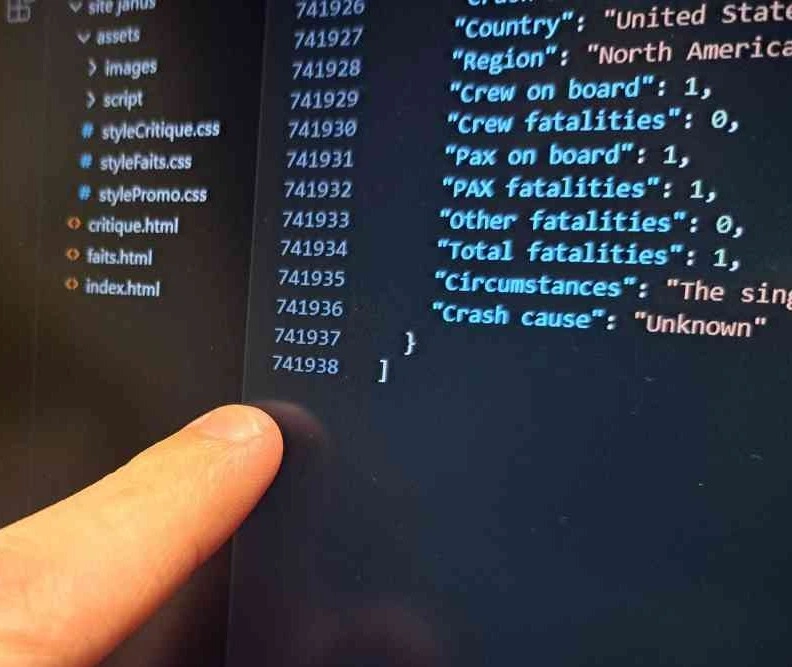
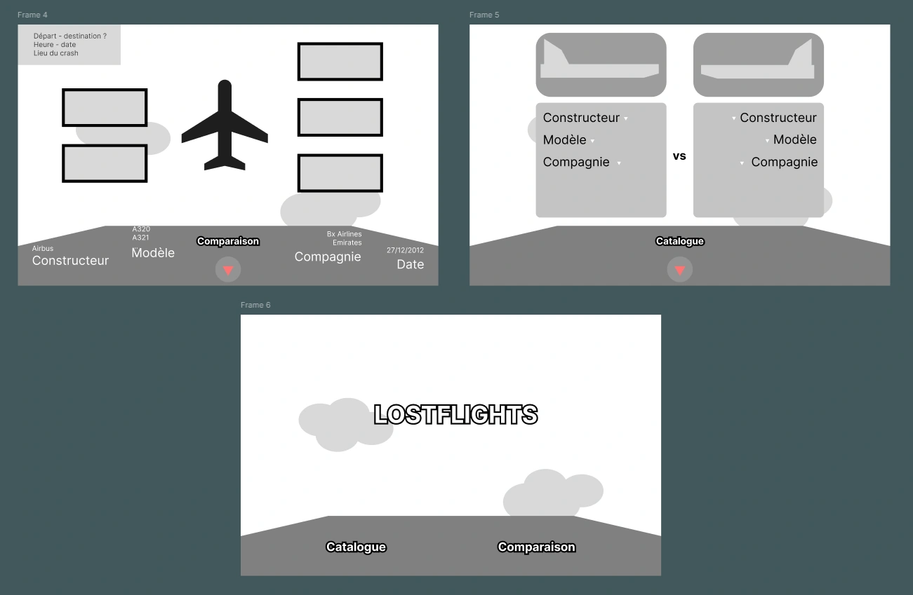

1. Contexte
Notre groupe, composé de Nicolas Lefebvre, Jarne De Scheerder, Andrea Romeo Vasquez et moi-même, a réalisé un projet visant à récolter des données concernant un sujet de notre choix et à les mettre en forme de manière interactive sur un site internet, ce projet était nommé “Dataplay”.
Après avoir étudié différentes idées, telles que : une étude des toiles d'araignées, ou, sur les zones géographiques les plus soumises aux intempéries. Concernant le sujet, il est ressorti que l’analyse de certains accidents d’avions était la piste la plus intéressante. En effet, après quelques recherches sur internet, Jarne a mis la main sur un fichier JSON regroupant la majorité des accidents aériens depuis 1908. Ce fichier reprend par exemple, le nombre de personnes à bord, le nombre de victimes ou encore les causes de l’accident. Nous sommes donc partis de cette base pour le projet.
2. Faire un tri
Le fichier JSON était beaucoup trop lourd pour l'exploiter directement sur un site internet (plus de 700.000 lignes de code). En accord avec le groupe, Jarne et moi avons donc décidé de faire un tri. Dans un premier temps, nous avons retiré tous les avions pour lesquels les données étaient incomplètes, ainsi que tous les accidents impliquant des avions militaires. Ce tri a pris beaucoup de temps mais a permis de réduire significativement le poids du JSON, ce qui a rendu le fichier plus exploitable pour la suite du projet.
Dans un second temps, j’ai encore diminué le poids du fichier en ne gardant que quelques constructeurs et modèles.
3. Des illustrations
Une fois le tri effectué et les modèles sélectionnés, j’ai réalisé des illustrations pour chacun des avions retenus. Pour chaque appareil, j’ai réalisé deux vues détaillées : une vue de dessus et une vue de profil, afin de permettre de montrer au grand public à quoi ressemblait l'avion avant son accident. Ils n'était donc pas utile que les avions soit grandement détaillé, celà m'a permis de ne pas prendre trop de temps pour cette tâche.
4. En parallèle
Pendant que le tri était en train d’être effectué, Nicolas et Andrea commençaient à travailler sur le design du site. Un premier Figma a vu le jour, pour nous permettre de montrer aux professeurs notre idée de design. Ce premier visuel n’était pas détaillé et n’avait aucune couleur. Il nous a juste permis de nous projeter dans la conception
Avant de passer au code, Nicolas a pris la décision de refaire un figma, mais cette fois avec les couleurs et les détails. Ce Figma nous a permis de voir à quoi notre site allait ressembler une fois qu’il serait terminé.
5. Le code
Une fois le design validé, nous avons lancé le développement du site en répartissant les tâches selon les compétences de chacun. Andrea s’est chargé des animations, notamment celle du nom du projet au chargement. Nicolas a travaillé sur le design global et l’ergonomie. Jarne et moi avons intégré les données du fichier JSON et développé les scripts d’affichage dynamiques, tout en respectant la structure visuelle. Jarne a également contribué au JS et au SCSS pour ajuster l’interface.
Pour éviter les conflits, nous avons utilisé GitHub : chaque membre travaillait sur une branche dédiée, intégrée au “main” une fois testée. Cette organisation asynchrone et structurée nous a permis d’avancer efficacement et en limitant aux maximum les erreurs.
6. Les soucis rencontrés
Lors du projet, le groupe a dû faire face à quelques ennuis tels que la semaine de vacances. En effet, durant cette semaine il a été difficile de regrouper tous les membres du groupe de façon régulière pour travailler (à cause notamment des jobs étudiant de certains membres). Nous avons donc dû nous adapter en nous répartissant les tâches sans vraiment savoir ce que les autres faisaient (à cette période nous n’avions eu qu’une petite introduction à GitHub).
Malgré toutes les précautions prises lors du regroupement des différentes branches séparées, le groupe n’a pas échappé à quelques conflits, qu’il a fallu comprendre et régler sans en occasionner d’autres.
Durant la première semaine de Dataplay, nous devions rendre un autre travail (PRUX). Certains membres du groupe ont donc logiquement mis la priorité sur ce projet et non sur Dataplay.
7. Conclusion
Ce travail de groupe m’a permis d’apprendre à gérer des données d’un fichier JSON et à les exploiter sur un site internet. J’ai aussi été familiarisé à l’utilisation de GitHub et à la correction de bugs.